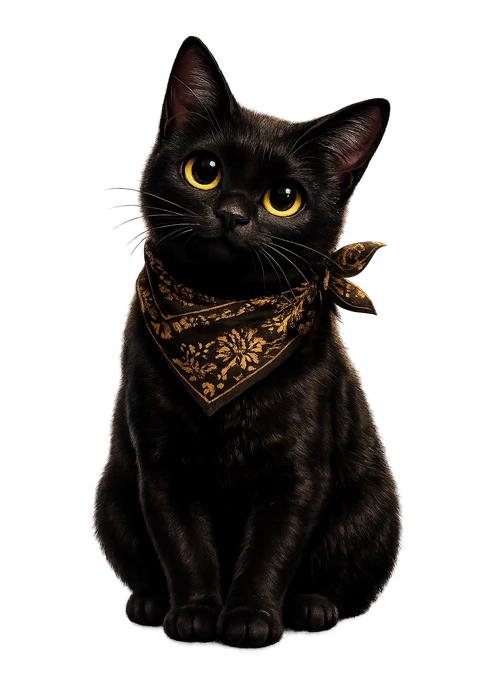

CEREMONIA
Rooftop · Ubud · Bali


Rooftop Restaurant & Bar · Ubud
Open daily 9:00 AM – 11 PM. Local & international tapas, crafted cocktails, Bali soul — under the open sky of Ubud.


Our Story
Ceremonia was born from a simple belief: that eating is sacred. Perched above the rooftops of Ubud, we've created a space where local ingredients meet international craft.
From the first pour of Kintamani coffee at dawn to the last cocktail under the stars — unhurried, intentional, deeply Balinese.
9:00
Opens Daily
11PM
Last Orders
3fl.
Rooftop
 ✦
✦
The Experience
Cuisine
Local ingredients elevated through international technique. Every dish is a dialogue between Bali and the world.
Cocktails
Crafted with Arak Bali, fresh tropical fruits, and the soul of Kintamani. Sip slowly — these are stories in a glass.
Atmosphere
Three floors open to the sky. Ubud's jungle canopy around you. The kind of peace that only arrives when you stop rushing.

Guest Reviews

Ubud · Bali
Gallery

Evenings under the canopy

The rooftop at golden hour

Where Bali meets the world


An intimate corner

Cocktails & conversation

The bar, after dark

Green & glowing

Tables set for ceremony

Crafted details

Ubud by night

The last cocktail
Find Us